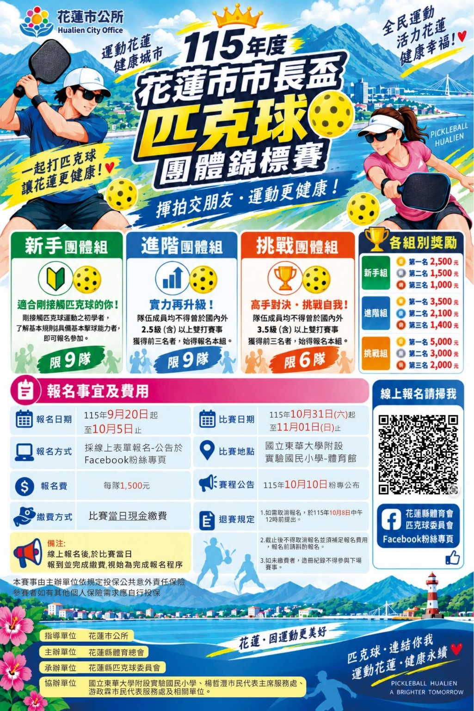

開放資訊115 年花蓮縣匹克球體驗嘉年華
09:30–12:00｜花蓮縣立體育館（小巨蛋）
公開活動資訊顯示免費體驗。是否仍有名額、參加資格與現場安排，請至來源頁確認。HLPB 僅整理公開資訊，非活動主辦或合作單位。
查看賽事整理查看活動來源與報名入口 開放資訊115 年花蓮匹克球臨打活動（花蓮小巨蛋）
13:30–16:30｜花蓮縣立體育館（小巨蛋）
公開活動資訊標示每人 250 元、限額 30 名，請自備球拍及室內運動鞋。報名狀態和細節以活動頁為準。HLPB 僅整理公開資訊，非活動主辦或合作單位。
查看賽事整理查看活動來源與報名入口 
賽事資訊115 年度花蓮市市長盃匹克球團體錦標賽
–｜國立東華大學附設實驗國民小學體育館
新手、進階、挑戰團體組。海報標示 9/20–10/5 線上報名、每隊 1,500 元；報名方式及最新安排請看花蓮縣體育會匹克球委員會公告。
查看賽事整理查看賽事公告 
賽事資訊115 年花蓮縣「洄瀾盃」綜合體育嘉年華競賽－匹克球項目
（星期日）｜花蓮縣立中正體育館（依海報）
比賽日期為 115 年 11 月 8 日（星期日）；組別、賽程及其他細節請以賽事資訊查詢系統為準。
查看賽事整理查看賽事資訊查詢系統 查看已結束活動
已結束第一屆花東快速盃匹克球邀請賽
｜花蓮縣玉里鎮藝文中心
組別、資格、費用及賽制請以主辦單位最新公告為準。
查看賽事整理 已結束115 年花蓮縣縣長盃匹克球比賽
｜花蓮縣（場地請見原始公告）
花蓮縣體育會主辦、匹克球委員會與花蓮縣匹克球協會承辦。原報名頁的場地名稱與地址欄不一致，請以主辦單位資訊為準。
查看賽事整理查看原始競賽資訊 已結束115 年花蓮縣奇萊盃匹克球比賽
｜壽豐國中
花蓮縣體育會主辦，花蓮縣匹克球協會等承辦；原報名頁列社會、壯年及女雙組。
查看賽事整理查看原始競賽資訊 已結束第一屆吉安鄉鄉長盃匹克球錦標賽
｜吉安鄉那荳蘭部落聚會所
吉安鄉公所賽後報導記錄首屆賽事與約 50 名參賽選手；此為歷史賽事資訊。
查看賽事整理查看吉安鄉公所報導 已結束第一屆奇萊盃匹克球賽
｜東華附小
2025 年 7 月 5 日舉行的首屆奇萊盃；由花蓮縣政府與縣體育會共同舉辦。
查看賽事整理查看當年賽事報導 報名前先確認
請確認組別、資格、費用與報到時間；活動安排以主辦單位公告為準。